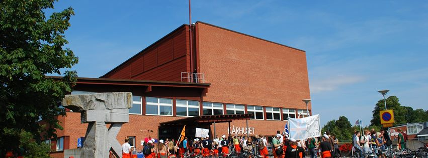

Purpose
LUFOSS gives scholarships to MSc students, doctoral candidates and researchers that contribute to open source projects. The LUFOSS board members decides about scholarships based on proposals that are assessed in relation to the criteria below. Anyone can propose candidates.
Criteria
- Utility. The utility of the OSS contribution is assessed in relation to the potential future benefit to end users, other OSS projects, businesses and society.
- Impact. The impact is assessed in relation to existing proof of, e.g., downloads, usage and recognition by end users, other OSS projects, businesses and society.
- Öresund Connection. Nominees should have a connection to the Öresund area.